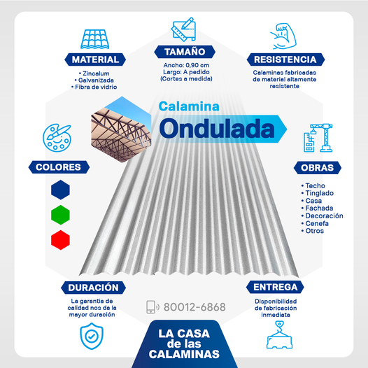

FABRICA DE CALAMINAS
CALAMINAS ONDULADAS

Calamina Ondulada Por su diseño se ha convertido en un producto clásico. Dada su flexibilidad, es apta para cualquier tipo de construcción que requiera protección en cubiertas, techos o tinglados industriales.